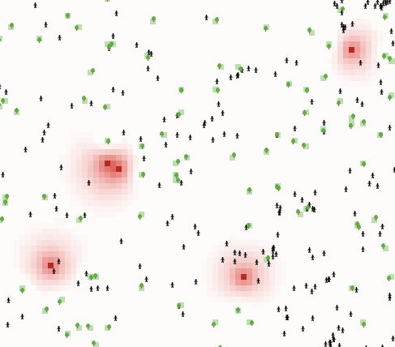
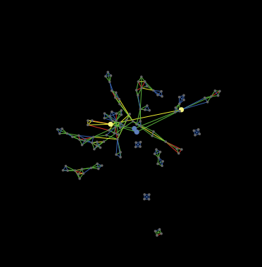
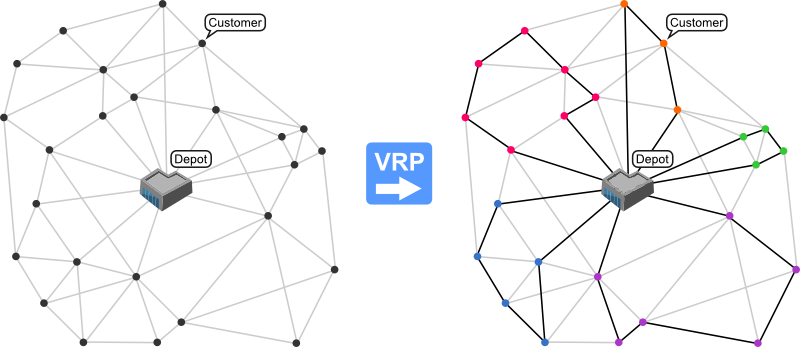
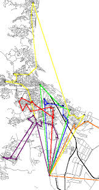
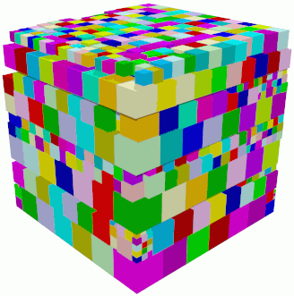
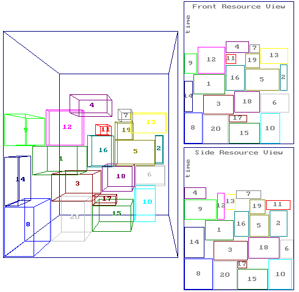
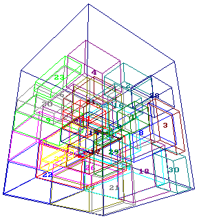

Matemática en Ingeniería Industrial
GISOI
Grupo de Investigación en Simulación y Optimización Industrial
Dpto. Ingeniería Industrial
Preguntas
- ¿Con que problemas trata el Ingeniero Industrial?
- ¿Que matemática usamos?
- ¿Para que usamos la matemática?
- ¿Como utilizamos la matemática?
¿Con que problemas trata el Ingeniero Industrial?
- Sistemas Socio-Técnicos
- Discretos
- No lineales
- Estocásticos
- Con altas dosis de incertidumbre
¿Que Matemática usamos en Ingeniería Industrial?
- Estadística
- Optimización Matemática
- Simulacion
- Algoritmia
- Matemática Discreta
- ...
¿Para que utilizamos la Matemática en Ingeniería Industrial?
- Armar planes de producción
- Diseñar redes logística
- Programar rutas de camiones
- Análisis de impacto económico
- Predicción de demanda
- Control de desvíos
- Detección de irregularidades
- ...
Control de desvíos en un proceso

Análisis del impacto ambiental en zona urbana de la emisión de gases por parte de una fábrica
Simulación de asignación de tareas a equipos de trabajo
Ruteo de flota de vehículos
Ruteo de flota de vehículos
Empaquetamiento
Empaquetamiento
Empaquetamiento
Simulación de tráfico

¿Como utilizamos la Matemática en Ingeniería Industrial?
- Recolección de datos
- Modelado y resolución
- Sistematización
- Control
Recolección de datos
- Sistemas aleatorios
- Implica utilizar estadística para poder captar los datos necesarios y correctos.
Modelado y resolución
Dependiendo del problema:
- Estadística
- Programación Matemática
- Heurísticas
- Otros
Sistematización
- Sistemas aleatorios
- Implica utilizar estadística para sintetizar y evaluar los resultados.
Control
- Sistemas aleatorios
- Implica utilizar estadística para verificar el correcto desempeño del sistema.
¿Cual es la rama de la Matemática mas utilizada en Ingeniería Industrial?
Cálculo- Estadística
¿Que herramientas de estadística utilizamos?
- Estadistica Frecuentista
- Estadistica Bayesiana
- Series de Tiempo
- Regresión Lineal
¿Que herramientas de estadística utilizamos?
- Regresión Logística
- Estadística no paramétrica
- Algoritmos de clasificación
- Monte Carlo Markov Chain
¿Que se podría mejorar en los planes de estudio?
- Primero, mas Estadística
¿Que hay que mejorar en los planes de estudio?
- Segundo, mas Investigación Operativa
¿Que hay que mejorar en los planes de estudio?
- Tercero, mas programación (o muchos, muchos softwares)
¿Por que programación?
- Imposible de realizar análisis estadísticos a mano en la practica
- Excel es útil pero bastante limitado algunas veces
- No se puede optimizar ni simular un problema real sin programar
- Existe R (y Python)